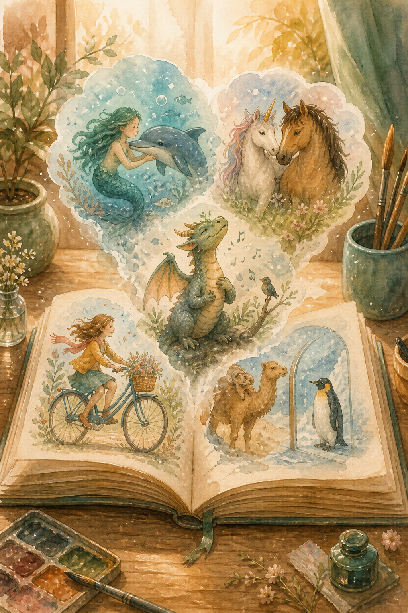
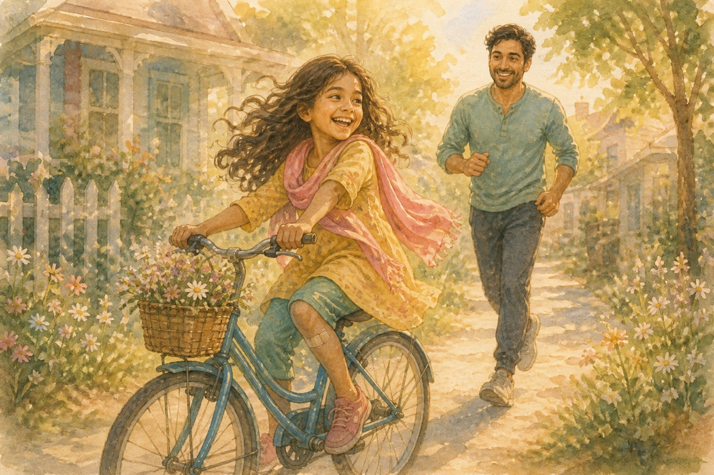
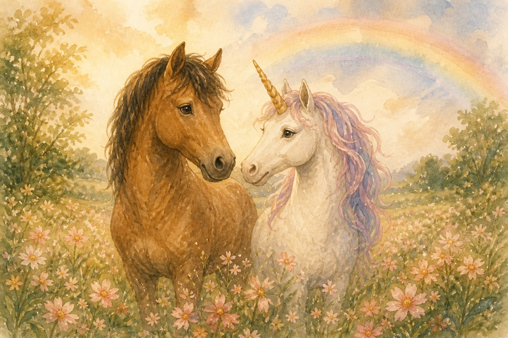
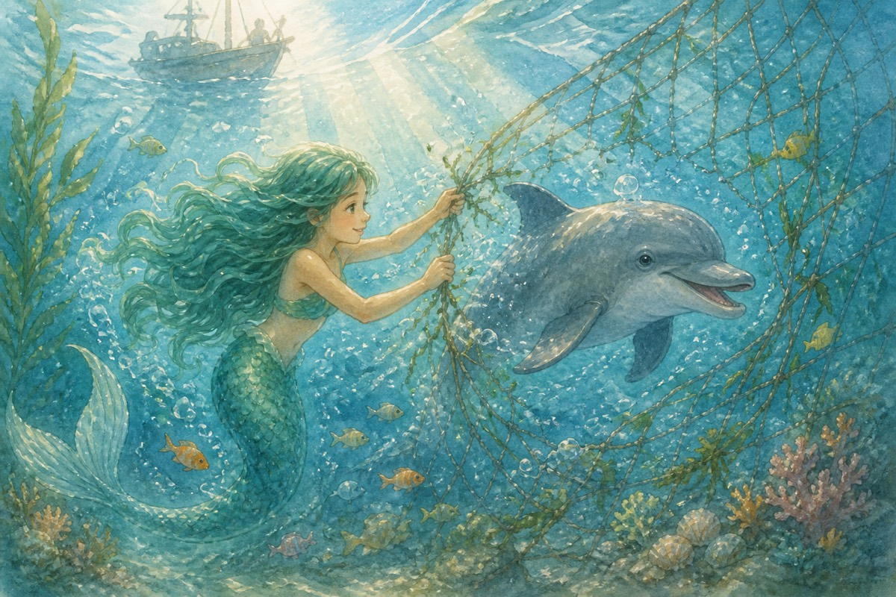
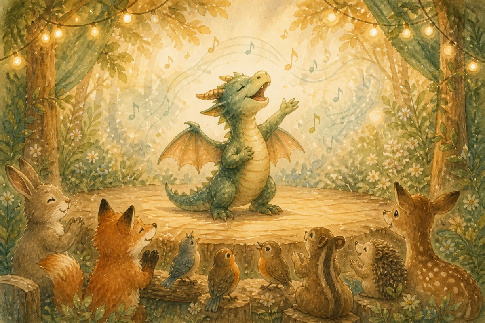
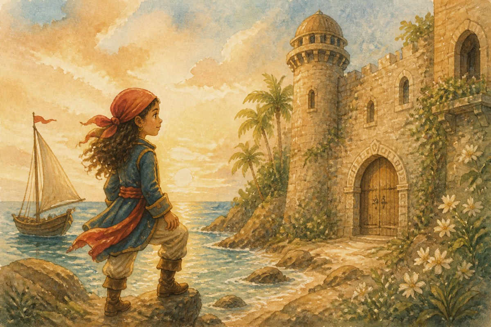
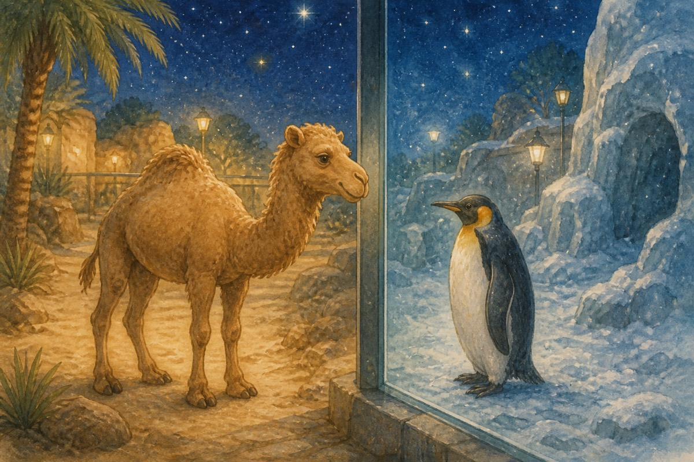

Short StoriesSix little tales, and a thought
A scaredy-poke learns to ride. A horse and a unicorn swap jobs. A mermaid and a dolphin take turns saving each other. A dragon would rather sing. A she-pirate finds a quiet castle. A camel and a penguin compare their homes. And a thought about doing the work ourselves.
The stories
Mia and the Bicycle
Mia was scared of everything — at least that’s what she thought. Everyone teased her and called her the scaredy-poke. That was until one day when she was talking to her friend, Stuthi. This was their conversation.

Mia — I wish I was as brave as you, Stuthi.
Stuthi — Why are you always so scared?
Mia — What if something bad happens to me while doing something?
Stuthi — Even if something happens, you should get back up.
Mia — How are you so brave even when you are talking? I feel so scared I could run away sometimes.
Stuthi — When I am scared, I think of good things that I like. It helps me to face my fears. You should try it — it works very well on me.
Mia — I will definitely try it and see how it works on me. Thanks for the advice.
The next day, Mia was scared as she really wanted to ride her bicycle but she didn’t want to fall. She tried Stuthi’s advice and thought of yummy chocolate ice cream. She and her dad were practising outside.
Dad — Come on Mia, pedal faster. I am holding on to the cycle.
Mia — I am scared, Dad. What if I fall?
Dad — If you fall, just get back up.
Mia — But Dad, what if I get hurt very badly?
Just then she fell from the cycle and injured her knee. Her dad put a bandage on it and comforted her, but now she was scared to ride her cycle. She thought of the ice cream again and decided to try again tomorrow.
The next day she was trying hard to ride her cycle.
Mia — Dad, am I cycling fast enough?
Dad — Yes Mia, you are doing good. Just don’t worry about anything.
Mia — Okay, Dad.
Just then, her dad let go of her cycle. Mia kept pedalling. He watched her and followed. She didn’t even notice till she parked the cycle and looked back. She realised what had happened and started laughing along with her dad. Now she was off on a bike ride with Stuthi and her dad. The next time she got scared, she would remember this incident and face it.
✿
The Switcheroo
Once, there lived a horse and a unicorn. They admired each other. Horse thought Unicorn was lucky as she was loved and admired by everyone. But Unicorn didn’t know Horse thought he was lucky — as he had no jobs to do and the farmer looked after him so well too. He didn’t need to make rainbows or be amazing to all those young girls and boys.

One day, Unicorn decided to visit Horse’s stable. When Horse saw her, he couldn’t help confessing this to her. Unicorn also shared her thoughts about him, and both of them were surprised and decided to switch places.
Horse liked flying and making rainbows, but he wished he could have some time to rest. And Unicorn liked taking a break from all her jobs, but she missed doing all those things instead of having nothing to do.
They both realised that they were best at being themselves instead of somebody else. And even though Horse accompanied Unicorn and helped her make rainbows, and even though Unicorn still came to visit Horse and go riding with him, they liked being themselves best.
✿
Coral and Rose
Once, there lived a beautiful mermaid named Coral. She had a very good friend who was a dolphin. Her name was Rose. They liked each other’s company. All was peaceful in the ocean, until a fisherman came. He caught Rose in his big net. She tried to break free but the net was too strong. Just then, Coral saw her. She tore a hole in the net for Rose to escape. Rose swam out of the net just in time, for the fisherman was just about to pull up his net. Rose thanked Coral and promised to repay her some day.

One day, there was a big storm and the ocean went wild. The waves separated Rose and Coral from the other mermaids and animals. But Rose knew just what to do. She whistled as loud as she could. The dolphins heard the whistle and started to search for them. Rose kept whistling until they found her and Coral. The dolphins led them to safety. Coral thanked Rose and praised her for her quick thinking. The two of them lived happily ever after.
✿
Hugo’s Song
Hugo the dragon felt like nobody understood him. He loved singing more than anything in the world. But when the animals saw him, they wanted him to breathe fire. That was until there was a talent show. All the animals hoped he would breathe fire, as they had always wanted. But Hugo had other plans. He decided he was going to sing a song he had written. That would show everyone what his true passion really was. He didn’t tell anyone his plans. They would just beg him to breathe fire.

He worked all day long, writing his song and rehearsing it. Finally, the day came. Everyone went to the talent show as they all wanted to see him. But when Hugo went on stage and sang his song, they all thought it was the best song they had ever heard. Now, wherever Hugo goes, they ask him to sing his songs. He is now the happiest dragon alive.
✿
The Quiet Castle
Once there lived a she-pirate named Delia. One day, she was sailing across the Indian Ocean when she saw a beautiful castle. To others, it was an old tower, but in her eyes it was the most beautiful castle ever. She approached it. On the door it said, “If you answer one riddle, you may pass.”

“Okay,” said Delia bravely.
“Who discovered gravity?” asked a voice in the air.
“Isaac Newton,” she answered.
All of a sudden, the door opened. She wandered around the castle when she found a magical mirror. The mirror said, “Finally you are here to save the day. There is a baby dragon who everyone thinks is a monster. He is harmless, don’t worry — just lift it up. The castle will come back to life.”
So she began hunting. She finally found a room with the dragon. She lifted it up and the dragon disappeared. The castle was restored! In front of her eyes, many princesses and princes appeared. They all thanked Delia for all her work. From that day on, life in the castle went on peacefully.
✿
The Camel and the Penguin
It was night-time. There was not a sound to be heard. All the animals were getting ready for bed. Humpy, a camel, was walking around, wondering about the lives of other animals like him, when he saw a penguin looking at him through the transparent wall. Curiously, he walked towards the wall.

“Hello there, I’m Raya. Who are you?” said the penguin.
“Hello, I am Humpy,” he replied.
“What do you use that big hump of yours for?” asked Raya.
“As I live in scorching hot conditions, food is scarce. This hump stores fat that I use when I can’t find food,” replied Humpy.
“How clever! Even I store fat, though not in a hump like yours. It’s stored underneath all my feathers and skin and it is called blubber,” said Raya.
“How do you live in this cold climate? It confuses me — what do you use to thrive?” asked Humpy.
“I look at my feathers. They are packed very tightly and are so numerous that no wind or water can pass through,” replied Raya.
“But what if it’s too cold even for your coat?” Humpy asked.
“Then, we use the greatest trick of all: friendship. We all get together and form a big group called a huddle. We share our warmth to survive,” explained Raya.
“See my long legs — they may look like nothing, but they keep my body away from the hot sand, and my wide flat feet stop me from sinking into the soft sand,” said Humpy.
“We both face the opposite extremes, built perfectly for our homes,” said Raya.
“Exactly. We each fit the place we live,” replied Humpy.
“Until tomorrow then,” said Raya, walking away.
“Until tomorrow,” said Humpy, and walked back to his exhibit.
✿
Do It Ourselves
In today’s living world, people are busy with apps like Google, WhatsApp, etc. Every time we get a homework assignment, we often Google up the answer or get hints from it. So we’ve forgotten to pick up a book to figure out the answer. Why do we need to?
It takes so much time to find the answer, underline it and then write it down. But now, it’s like technology is taking over. We don’t read books that great authors have written — we play video games instead. We don’t use our brains or try to find the answer, we Google the answer. Just imagine: teachers are correcting the work the internet provided us. We get “Very Good” or “Excellent” for the work Google did for us. Wouldn’t it be better to just do it ourselves?
Now, I’m not saying we should stop using the internet completely. I’m just saying that we must use it for the right reasons.
✿